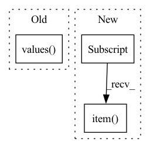

Pattern ID :31419
Before Change
// Make prediction
with autocast():
losses, predictions = self._model.train_step(data, targets, evaluation=True)
loss_abs = sum(losses.values() )
loss_agg += loss_abs.item()
loss_bbox_agg += losses["reg"].item()After Change
)
loss_agg += loss_abs.item()
loss_bbox_agg += loss_dict["bbox"].item()
loss_giou_agg += loss_dict["giou"].item()
loss_cls_agg += loss_dict["cls"].item()
loss = loss_agg / len(self._val_loader)In pattern: SUPERPATTERN
Frequency: 3
Non-data size: 3
Instances Fragment ID: 92072800
Project Name: bwittmann/transoar
Commit Name: d1d610ce7014a86c72c7d5625dbe82be40b2c340
Time: 2022-06-24
Author: bastian.wittmann@tum.de
File Name: transoar/trainer.py
M Class Name: Trainer
N Class Name: Trainer
M Method Name: _validate(2)
N Method Name: _validate(2)
M Parent Class:
N Parent Class:
M File Name: transoar/trainer.py
N File Name: transoar/trainer.py
M Start Line: 105
M End Line: 146
N Start Line: 100
N End Line: 141
Before Change
// 2. Test unsync()
metric_module.unsync()
state_dict = metric_module.state_dict()
for v in state_dict.values() :
tc.assertEqual(v.item(), value)
// 3. Test reset()After Change
if k.startswith("rec_metrics.") and k.endswith("_fused_states"):
for i in range(v.size(0)):
for j in range(v.size(1)):
tc.assertEqual(v[i][j].item() , 0)
def test_rank0_checkpointing(self) -> None:
// Call the tested methods to make code coverage visible to the testing system Fragment ID: 92072801
Project Name: facebookresearch/torchrec
Commit Name: df576fab294f27a11da2cc337c951b35210db8b4
Time: 2023-01-13
Author: renganxu@meta.com
File Name: torchrec/metrics/tests/test_metric_module.py
M Class Name: MetricModuleTest
N Class Name: MetricModuleTest
M Method Name: _run_trainer_checkpointing(0)
N Method Name: _run_trainer_checkpointing(0)
M Parent Class: unittest.TestCase
N Parent Class: unittest.TestCase
M File Name: torchrec/metrics/tests/test_metric_module.py
N File Name: torchrec/metrics/tests/test_metric_module.py
M Start Line: 198
M End Line: 236
N Start Line: 198
N End Line: 242
Before Change
// Make prediction
with autocast():
losses, _ = self._model.train_step(data, targets, evaluation=False)
loss_abs = sum(losses.values() )
self._optimizer.zero_grad()
self._scaler.scale(loss_abs).backward()After Change
loss_agg += loss_abs.item()
loss_bbox_agg += loss_dict["bbox"].item()
loss_giou_agg += loss_dict["giou"].item()
loss_cls_agg += loss_dict["cls"].item()
loss = loss_agg / len(self._train_loader)
loss_bbox = loss_bbox_agg / len(self._train_loader) Fragment ID: 92072802
Project Name: bwittmann/transoar
Commit Name: d1d610ce7014a86c72c7d5625dbe82be40b2c340
Time: 2022-06-24
Author: bastian.wittmann@tum.de
File Name: transoar/trainer.py
M Class Name: Trainer
N Class Name: Trainer
M Method Name: _train_one_epoch(2)
N Method Name: _train_one_epoch(2)
M Parent Class:
N Parent Class:
M File Name: transoar/trainer.py
N File Name: transoar/trainer.py
M Start Line: 46
M End Line: 88
N Start Line: 42
N End Line: 83